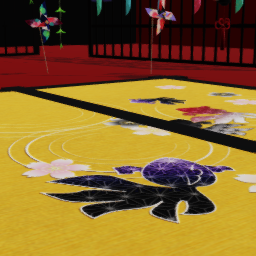

sdPBRおたのしみマテリアル一覧
sdPBRのマテリアル一覧です。読み込みが長くてイライラするのに思ったのと違うマテリアルだと更にイライラすると思うので作ってみました。あんまりイライラするのがイヤな方はチュートリアルにも書いてありますが、使いそうなマテリアルを複数貼り付けたマテリアルキャッシュ的な物体を作っておくと良いです。2020年7月現在のMMD/MMEの仕様では、シーン内に既に読み込まれているエフェクトに対してはコンパイルの必要なく読み込まれます。
material/bg
|
|
 |
drywood
スペキュラを抑えてラフネスを高くした汎用マテリアルです |
autonormal
法線を輝度の傾きから自動生成してメリハリを付けます |
contrast
autonormal+AOで不自然なほどメリハリを付けます |
基本的に背景を手抜き設定するためのマテリアルです。これで大体の雰囲気をつかんでから細かく仕上げていきましょう。
床が白い気がする時はsdPBRのモーフ「環境色暗く」を上げた方が良いでしょう。contrastは黒い物体などにどうしてもスペキュラの白さを載せたくない時のために用意してありますから、最初から全体に使わない方が良いと思います。
material/body
|
 |
eye
白目用。セルフシャドウ・SSDOの影響を受けづらいです |
eye_tricky
白目用の特徴＋陰の影響も受けづらくしてます
法線が反転しているなどトリックを施された白目にどうぞ |
| |
|
|
pupil
黒目用。セルフシャドウ・SSDOの影響を受けづらいです |
pupil_darken
黒目用。光源の具合で黒目が明るすぎると
白目を剥いたようになるのでそれの対策用 |
| |
|
|
skinEX
Version1.10より追加。よい肌用 |
wetskinEX
Version1.10より追加。潤いのある良いお肌用 |
|
 |
|
|
skin
肌用 |
skin2
テカりと赤みが強いです |
skin3
色が薄い乾燥肌です |
skin4
法線マップ無し、白い肌用 |
| |
|
|
|
|
skin5
skinをベースにテカりをわずかに抑えました |
wetskin
潤いのある肌です |
toonskin
2値的な影を付けます |
skinLatMiku
ほぼLat式ミクさん用に開発された
シェーディングを放棄するシェーダです
baseColorとMMDのメイン光源の色だけが加味され
他の要素の影響を受けません |
| |
|
|
|
|
hair
髪用 |
hair2
光沢を強調した髪 |
hair3
法線を強調したメリハリのある髪 |
hair4
柔らかいサラサラヘアのつもり |
material/cloth
|
|
|
|
cloth1
斜めに繊維の入った服 |
cloth2
法線マップ無し光沢服 |
cloth3
縦横に繊維の入った服 |
denim
デニム生地風 |
| |
|
|
|
|
leather
レザー風 |
knit
ニット風 |
stocking
ストッキング風 |
wetcloth
潤いのある服 |
| |
|
 |
lace
レース。半透明部分が出来るので描画順に注意が必要です |
cloth_cutout
ファーの部分に適用しています
α値が一定以下の部分を切り抜いて表示するマテリアルです |
material/controllable
|
|
controllable
sdPBRMaterialController.pmxで制御できます |
controllable_PreintegratedSkin
sdPBRMaterialController_PreintegratedSkin.pmx
で制御できます
skinEXのようなpre-integrated skinを
使用したマテリアルを調整できます |
material/etc
|
|
|
|
car
車のボンネット風 |
clearcoat
クリアコート材質 |
plastic
ツヤのあるプラスチック風 |
wing
凹凸のある翼風 |
| |
|
|
|
metal
研磨された金属 |
metal_mid
ちょっと手入れされた金属 |
metal_rough
未研磨の金属 |
| |
|
|
|
|
emissive
発光
baseColorと同じ強さの光が単純に加算されます
そぼろ様作AutoLuminous等と併用しましょう |
emissiveX2
2倍発光 |
emissiveX4
4倍発光 |
emissiveX05
0.5倍発光 |
謝辞
口絵の作成に以下をお借りしました
| 和風ステージ(朱) | 一護牛乳様 |
| つみ式ミクさん | つみだんご様 |
| ミクダヨー | すず様 |
| 天龍改二 | (｀・ω・)様 |
誠にありがとうございました！